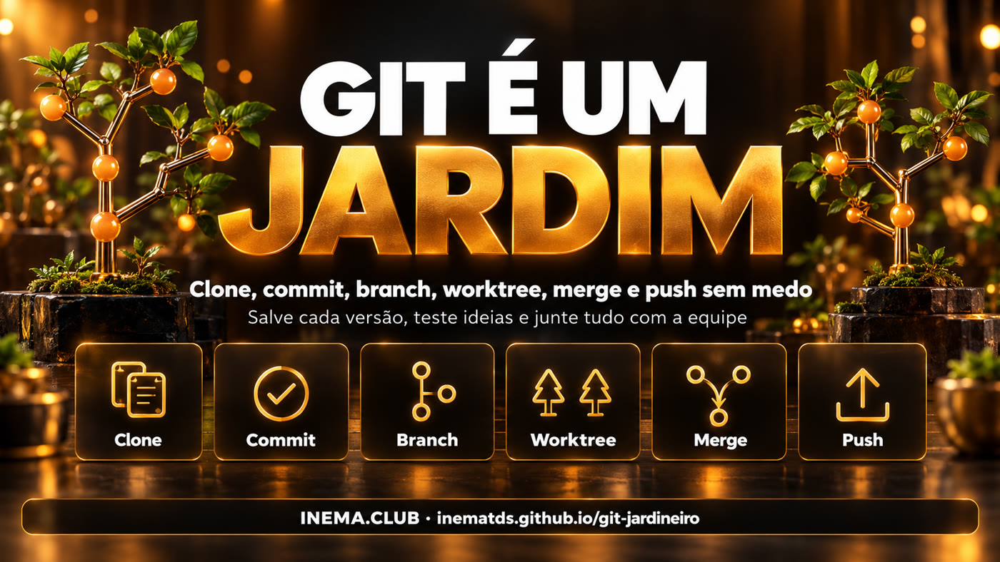

Este é um guia grátis que explica o Git usando a história de um jardineiro. O Git é a ferramenta que guarda cada versão de um projeto, como fotos de um jardim tiradas ao longo do tempo. Serve para quem programa, para quem trabalha com agentes de IA e para quem só quer parar de perder arquivos. Aqui você aprende seis comandos (clone, commit, branch, worktree, merge e push), cada um com um desenho, uma explicação simples e os comandos prontos para copiar. Para praticar, basta ter o Git instalado.
O que é
O dicionário do jardineiro
Antes dos comandos, a metáfora. Cada peça do Git tem um lugar no jardim — guarde esta tabela e o resto fica fácil.

🌱 Jardim = projeto
A pasta inteira do seu projeto, com tudo o que está dentro.
🌿 Plantas = arquivos
Cada arquivo que você cria, edita ou apaga.
📸 Foto = commit
Uma foto do jardim inteiro, com data e uma frase dizendo o que mudou.
🏷️ Etiqueta = branch
Um nome que aponta para uma foto e anda junto quando você tira fotos novas.
🪴 Canteiro = worktree
Outra pasta do mesmo projeto, para trabalhar em duas frentes ao mesmo tempo.
🏡 Estufa = remoto
A cópia compartilhada com a equipe, por exemplo no GitHub.
Como funciona
Os 6 passos do jardineiro
É o ciclo de todo dia: você clona uma vez e depois repete commit, branch, merge e push. Clique num passo para a página explicativa dele.
Imprima, salve ou deixe aberta ao lado do terminal.
git clone <url> jardim
trazer o projeto e a história para o seu computador
git status
ver o que mudou e o que está na bandeja
git add .
pôr as mudanças na bandeja (área de preparo)
git commit -m "frase"
tirar a foto: salvar a versão no seu computador
git switch -c flores
criar a etiqueta flores e trabalhar nela
git worktree add ../jardim-main main
abrir outra pasta, em outra branch
git merge flores
juntar a branch flores na branch atual
git push origin main
levar as suas fotos para a estufa
git fetch
baixar a história nova da estufa, sem juntar
git pull
baixar e já juntar na sua branch
Commit salva em casa. Push compartilha com a equipe.
O ciclo de todo dia
Clone uma vez. Depois: commit o tempo todo, branch para cada ideia, worktree quando precisar de duas frentes, merge para juntar e push para compartilhar.